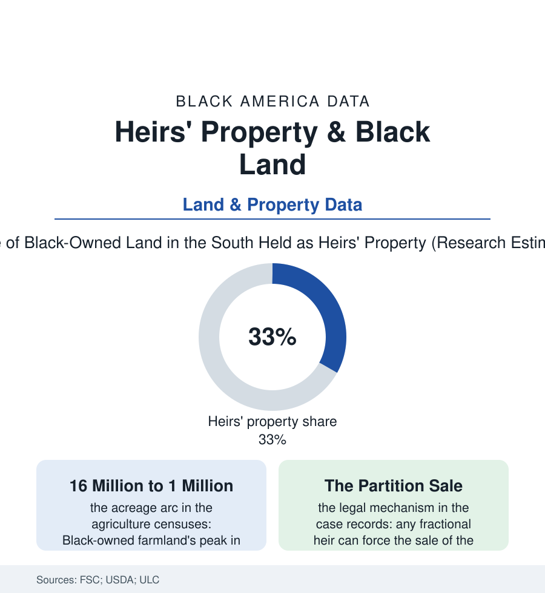

Black Census
Heirs' Property: The Land That Paper Forgot
A third of Black-owned Southern land may pass without wills or clear title — a legal fog that has cost families farms for a century and that reform is finally mapping. The heirs' property file.

The most consequential document in Black Southern landownership is the one that usually does not exist: the will. Across the rural South, land bought by freedpeople and their children passed down by intestacy — divided among all the heirs, and their heirs, in undivided fractional interests — until a single farm might have hundreds of owners, no clear title, and no legal way to mortgage, lease, or protect itself. Scholars call it heirs' property, and it is among the largest quiet mechanisms of Black land loss in the data. This article reads the heirs' property file.
The Fog and What It Costs
The scale, in the estimates that anchor the literature: Black farmland ownership peaked in the early twentieth century at somewhere near fifteen million acres — and the agriculture censuses trace the remnant today at a small fraction of that peak, the loss composed of many mechanisms (the credit file's discriminations, the migration's sales, violence and fraud in the deed records) of which heirs' property is the most legally distinctive and, the reformers argue, the most fixable. The fog's costs itemize across this atlas's other files: the land that cannot collateralize a loan (the farm file's credit denials beginning in the title itself), the USDA and disaster programs the unclear title cannot qualify for (the hurricane-relief rejections of the Gulf data — the aid application demanding the proof of ownership the family's whole history never generated), the timber unharvested and the mineral unsigned, the tax-sale exposure — and at the center, the partition action: the doctrine, inherited from English property law, that any fractional co-owner may ask a court to divide or sell the whole. For a century the speculator's play ran through that door in the case records: buy one distant cousin's fiftieth share for ready cash, petition for partition, watch the court order the auction the family cannot win — the land passing at courthouse prices, the family's century gone in an afternoon, all of it perfectly legal, which is the file's point: the mechanism was not corruption of the system but the system, applied to a population whose wealth was land and whose paperwork the surrounding institutions had never helped it keep.
The Reform Decade
The counteroffensive, in the current data, is one of property law's genuine reform stories: the Uniform Partition of Heirs Property Act — drafted by the law professor whose research mapped the loss, Thomas Mitchell — spreading state by state through the South and beyond (notice to all heirs, an independent appraisal, the family's right to buy out the petitioner's share, the court ordered to weigh the land's ancestral and cultural value alongside its price: the auction's arithmetic rewritten so the family finally plays with the same information as the speculator), adopted now in a majority of the heirs'-property states in the Uniform Law Commission's count. Beside it runs the title-clearing infrastructure the problem always needed: the legal-aid and federation clinics writing the wills and quieting the titles county by county (the heirs' property centers' caseload data a map of the fog itself), the USDA's relending program capitalized to buy out fractional interests and consolidate title, the 2018 farm bill's provisions letting heirs' operators prove eligibility with the documents they actually have. The file closes on the data's own momentum: the land-loss curve has not reversed — the acreage still ebbs in the agriculture census — but its slope is argued now in legislatures with maps of the fog in hand, and the families' counter-strategy, the estate plan, has become the movement literature's most repeated piece of advice: the will as a civil-rights document, the deed as an inheritance's armor. The land remembers everything. The paper, at last, is being taught to.
Reading the Heirs' Property Data
Heirs' property is the wealth file written in dirt: an inheritance system that works perfectly for families with lawyers and dissolves, across four generations, the wealth of families without them. The reform's spread is the count to watch. The land — fifteen million acres' worth of memory against a million's remainder — is the stake, and for once the mechanism of its loss is neither hidden nor mysterious: it is a form nobody filed, and forms can be filed.
More in Black Census
The Black Population of the United States: Size, Definitions, and Distribution
The Black population of the United States totals 52.8 million — 15.4 percent of the nation. How the Census Bureau defines and counts the population, and where it lives.
Black Median Household Income in the United States
Black median household income stands at $56,490 in the Census Bureau's annual income report — how the figure is measured, how it compares, and what drives it.
The Black Poverty Rate: Levels, Children, and the Long Trend
The official Black poverty rate is 17.1 percent — against 11.1 percent nationally and 7.7 percent for non-Hispanic White Americans. How poverty is measured and what the data show.
Source: Federation of Southern Cooperatives; U.S. Department of Agriculture; Uniform Law Commission; Thomas Mitchell's land-loss research; U.S. Census of Agriculture.